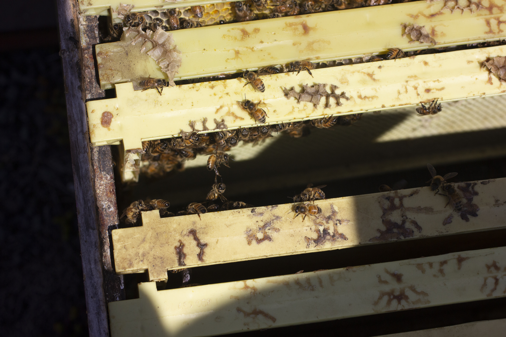
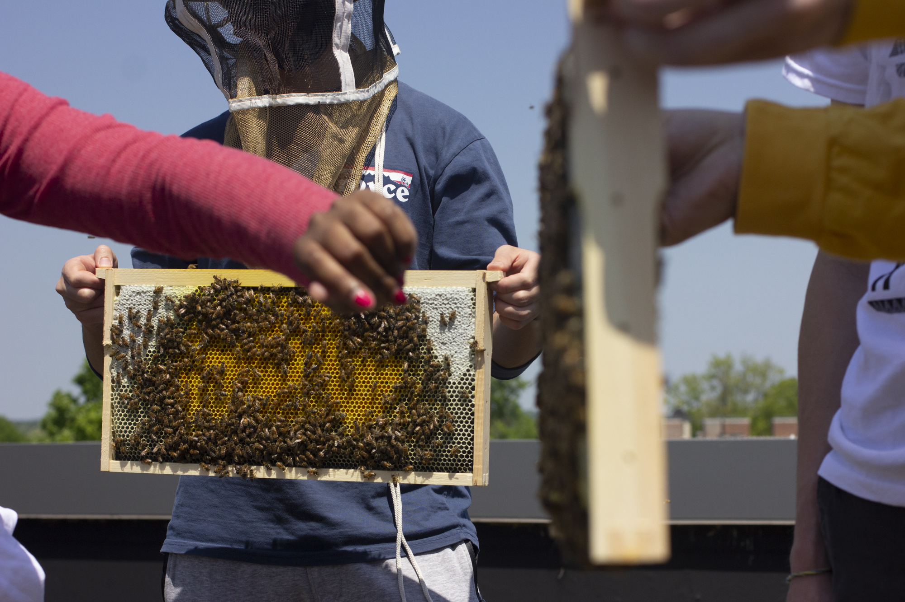
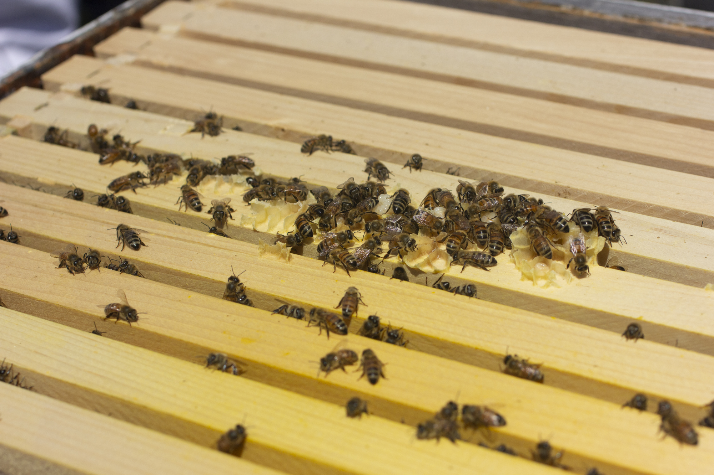

A Small Creature With A Big Life
When we look at a single honey bee we see a small, seemingly simple
creature. But behind that modest frame is an incredible story. From
the very start of its life, the bee has a fascinating journey.
Click to Learn the Life Cycle of the Honey Bee